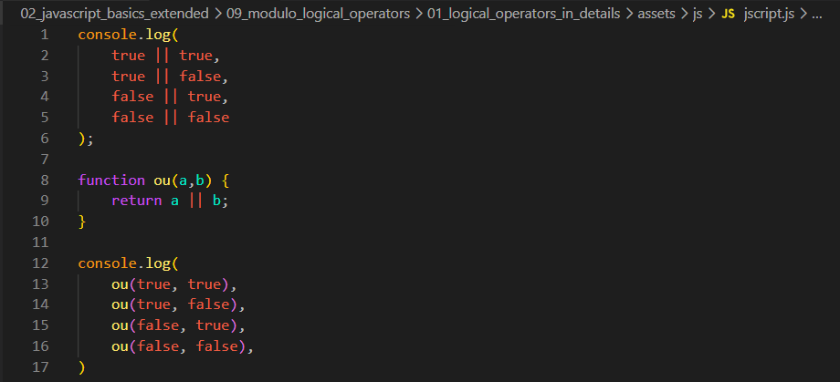
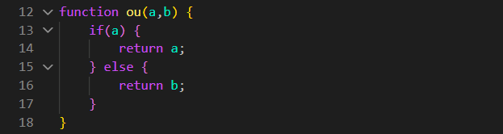
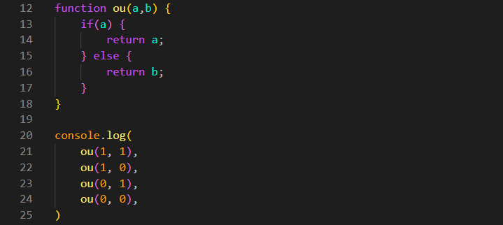
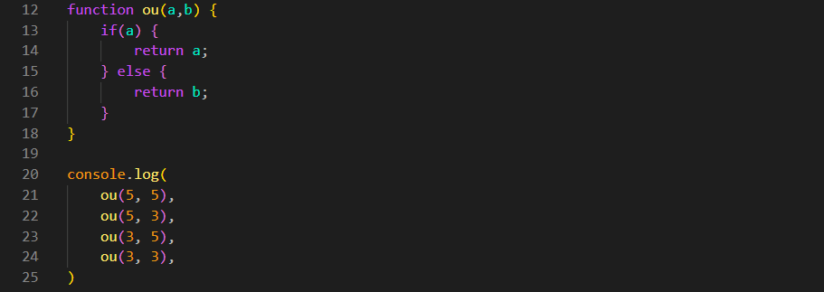
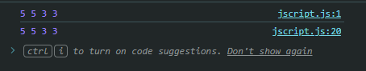
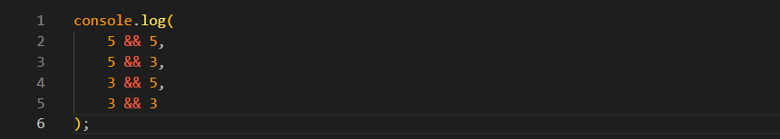
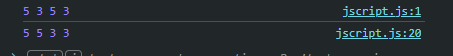

Modulo: Logical Operators - Aula: Logical Operators in Details
Intro
Agora iremos verificar uma seria de resultados logicos de uma serie de expressoes.
Agora iremos verificar uma seria de resultados logicos de uma serie de expressoes.

Em nossas comparações usando o operador lógico OU (||) no primeiro console, temos os seguintes resultados: true || true, true || false e false || true resultam em true. Por último, o resultado de false || false é false.
Com isso, observamos que o operador lógico ||, no JavaScript, retornará true caso pelo menos um dos lados da expressão avaliada seja true. Caso contrário, retornará false. Ou seja: se houver true em qualquer lado, o resultado é true.
Criamos uma função que retorna o resultado da comparação entre a || b. O comportamento é idêntico ao dos exemplos anteriores no console, gerando os mesmos resultados.
Agora, tentaremos obter os mesmos resultados utilizando a estrutura condicional if. O código ficaria da seguinte forma:

Como sabemos, as condicionais avaliam a expressão dentro dos parênteses como um booleano. Caso a condição seja verdadeira (true), a função retorna o valor definido no primeiro bloco; caso contrário, retorna o segundo. Com isso, alcançamos os mesmos resultados obtidos anteriormente.
Agora, mudaremos os valores para testar se o comportamento se mantém. Alteraremos true para 1 e false para 0:

No JavaScript, quando o motor da linguagem espera um booleano (dentro de um if, por exemplo), ele "força" a conversão de qualquer valor para true ou false. É aqui que entram o 0 e o 1:
Os Valores "Forçados" (Coerção):
Se alterarmos os valores para números diferentes de 0 e 1, os resultados podem parecer diferentes à primeira vista, pois o 0 e o 1 estavam se comportando exatamente como false e true.
Código alterado:


Observamos que o resultado mudou em comparação ao teste com 0 e 1. Isso ocorre porque, anteriormente, os valores eram convertidos diretamente para os booleanos que representavam.
Agora, como o motor está avaliando valores onde ambos os lados são Truthy (como 10 ou 20), o operador || retorna o primeiro valor avaliado que satisfaça a condição de ser "verdadeiro".
Iremos continuar com a mesma base de exemplo, porem iremos mudar apenas o operador || para &&. Ficando da seguinte forma:

Com isso teremos agora resultado diferentes. ficando da seguinte forma:

Como ja dito, quando temos a logica do ou (||), ele verifica se o primeiro lado da expressao e true e se sim, ja retorna esse primeiro valor.
Com o &&, é um pouco diferente ele faz o oposto, retornando o segundo valor.